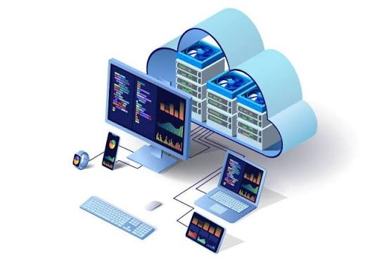

Computación en la nube
¿Qué es un servicio cloud?
Un servicio cloud (computación en la nube) es un modelo de entrega de recursos informáticos -servidores, almacenamiento, bases de datos, redes, software- a través de internet, en lugar de tenerlos instalados en un equipo o servidor físico propio. El proveedor del servicio se encarga del mantenimiento de la infraestructura y el usuario paga generalmente según el uso que le da.

Características principales
- Acceso bajo demanda: los recursos se activan cuando se necesitan, sin intervención manual del proveedor.
- Acceso remoto: se puede usar desde cualquier dispositivo con conexión a internet.
- Elasticidad y escalabilidad: los recursos pueden aumentar o disminuir según la demanda.
- Pago por uso: el costo depende del consumo real de almacenamiento, procesamiento o transferencia.
- Recursos compartidos: la infraestructura del proveedor es utilizada por múltiples clientes de forma simultánea.
Ventajas y ejemplos
| Modelo | Descripción | Ejemplos |
|---|---|---|
| IaaS (Infraestructura como servicio) | Ofrece servidores, redes y almacenamiento virtualizados. | Amazon EC2, Microsoft Azure VM, Google Compute Engine |
| PaaS (Plataforma como servicio) | Ofrece un entorno para desarrollar y desplegar aplicaciones sin gestionar servidores. | Google App Engine, Heroku, Azure App Service |
| SaaS (Software como servicio) | Entrega aplicaciones ya construidas listas para usar desde el navegador. | Google Workspace, Microsoft 365, Dropbox |
Entre las principales ventajas de la nube se encuentran el ahorro en inversión de hardware propio, la posibilidad de escalar recursos rápidamente, el acceso desde cualquier lugar, las copias de seguridad automáticas y la reducción de tareas de mantenimiento técnico para el usuario final.
Riesgos
- Dependencia del proveedor: si el servicio falla o cambia sus condiciones, el usuario queda limitado.
- Dependencia de la conexión a internet: sin conexión no es posible acceder a los recursos.
- Seguridad y privacidad de los datos: la información se almacena en servidores de terceros.
- Costos variables: un uso mal calculado puede generar gastos mayores a los esperados.
- Posible pérdida de control: sobre la ubicación física y gestión directa de los datos.